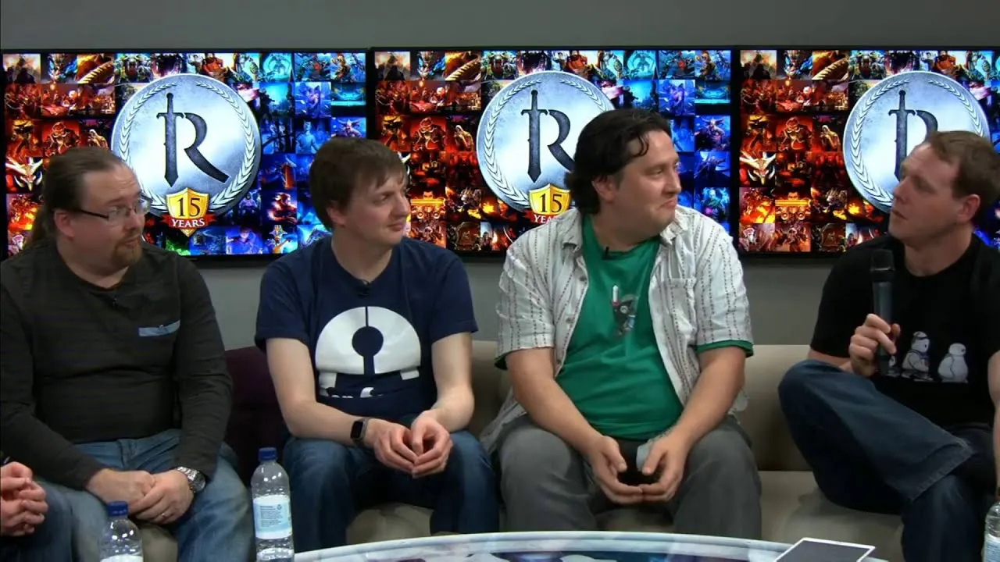
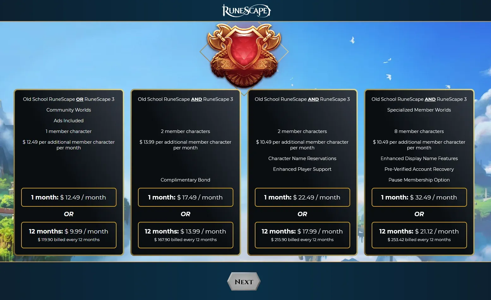
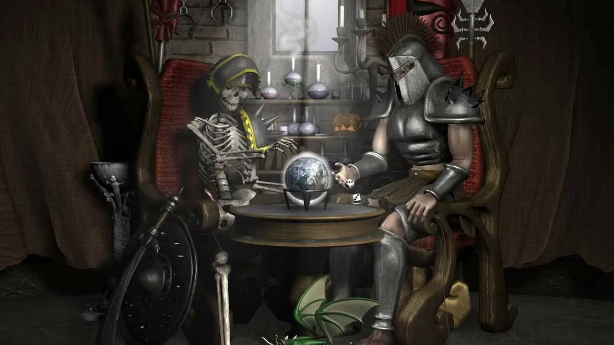

Before we dive into the issues these games are currently facing, there's a lot of background information for those unfamiliar with Runescape or Jagex that would be beneficial for getting the full context. If you're familiar with Runescape and its history, I'd recommend skipping to "present day".
Introduction
Since 2010, Jagex has changed hands multiple times, which started when Insight Venture Partners gained a controlling interest in the company leading to the departure of its original creators, Andrew and Paul Gower, from the board of directors. Since then, Jagex has been owned by 4 more entities - Hongtou, Macarthur Fortune Holding, the Carlyle Group, and currently, CVC Capital Partners.
Image Credit: Jagex
The effects of this change in leadership were felt by the community when Squeal of Fortune was added to the game - a daily activity where you could pay real money, or get one daily key to spin a wheel and receive a randomly generated reward. These rewards included lamps you could use to boost your stats immediately, coins, and armor and weapons. It was a controversial update among the community, and was replaced in 2014 with Treasure Hunter, which fulfills the same purpose as Squeal of Fortune, but there isn't a wheel anymore - only five chests and an ugly human avatar that stares at you while you decide which lootbox you want.
These changes, along with a total rehaul of the combat of the game left many players unhappy about these changes. In response, Jagex released Old School Runescape - which they promised would be free of all of the microtransactions and decisions that crippled their main game. Old School Runescape became incredibly popular - eventually dwarfing the player count of their primary game, Runescape 3. Both games still co-exist, with it being generally accepted that the aggressive monetization in Runescape 3 is a necessary evil for maintaining the integrity of Old School Runescape.

Image Credit: Jagex
Present Day
There's an interesting dynamic to the relationship between Runescape players, Old School Runescape players and Jagex. The developers are incredibly communicative with players and for the most part are beloved by their respective communities. However, the disconnect between what the community is willing to tolerate and what Jagex's corporate priorities are has never been more clear and this is exemplified in a survey Jagex sent to players on January 16, 2025.
Image Credit: Jagex
The survey wanted opinions on including ads in-game, charging for name changes, charging for additional account security, charging for access to the games API, charging for a shorter AFK timer, and charging for specialty membership worlds. These changes would affect both Runescape 3 and Old School Runescape - a detail that might be easily missed, as the official statement initially addressed only the Old School community until it was later updated.
The community received two responses fairly quickly due to severe community backlash - the first on the 16th and the final response, written by Jagex's CEO, on the 17th
One of the reasons we include controversial or polarising topics in surveys is because they provide valuable insights into what players truly like, dislike, and feel strongly about. Great community management isn’t just about listening to what players want; it’s also about being open to exploring uncomfortable topics so that we can make informed, player-driven decisions. Surveys like this allow us to gather feedback on ideas before they even come close to becoming reality. They act as an important safeguard, ensuring that anything unpopular or misaligned with the community’s values is identified early.
The responses were full of apologies and promises that none of the ideas within the survey were ever truly considered. They just want to cover all of their bases - it's not like they've ever implemented controversial updates before, right?
It's worth noting that Jagex was acquired by CVC Capital Partners in 2024 for £910 million. This monetization push is undoubtedly coming from CVC Capital attempting to extract more money from Runescape to recoup their investment the previous year. This survey was a normal occurrence to players of Runescape 3, but for Jagex to suggest this to the Old School Runescape community isn't a good sign for the future of the game.
Image Credit: Jagex
The lingering question is how CVC Capital plans to introduce additional monetization into Runescape. Currently, RuneScape 3 has 30,672 players online, while Old School RuneScape enjoys 135,500. The Runescape 3 community has been struggling for a long time due to excessive monetization, and while Jagex could continue to extract money from those players, they risk further alienating an already dwindling playerbase.